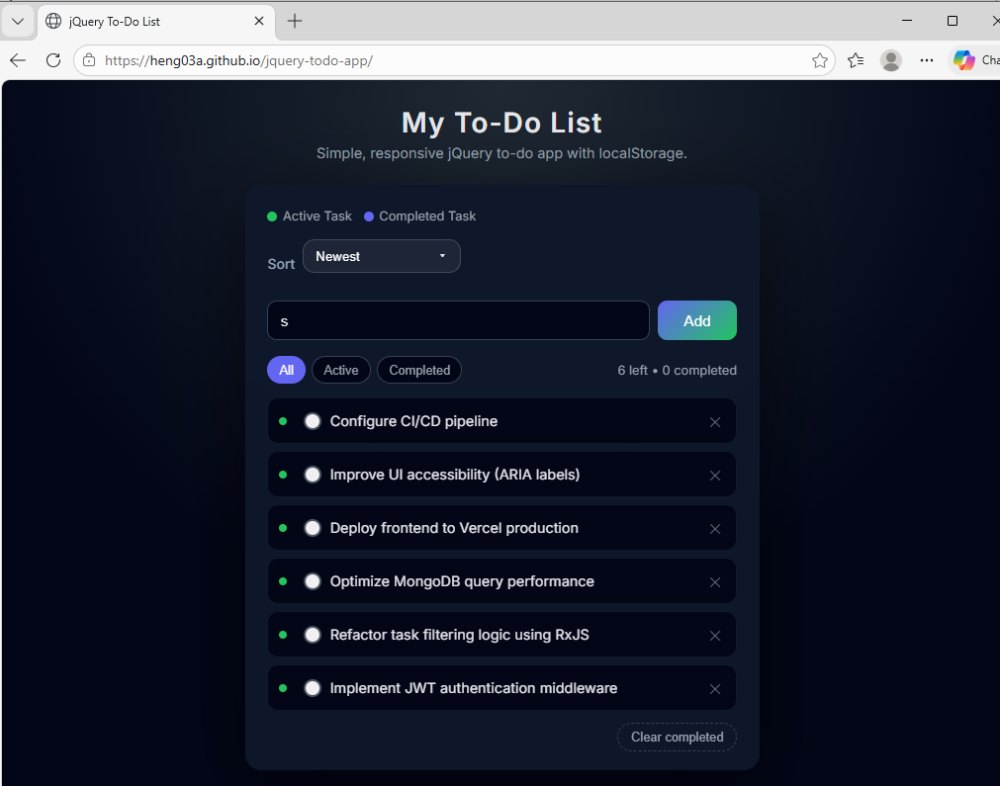
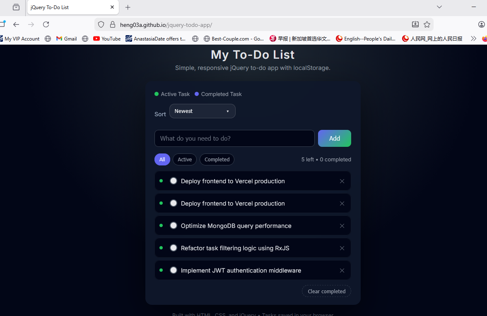
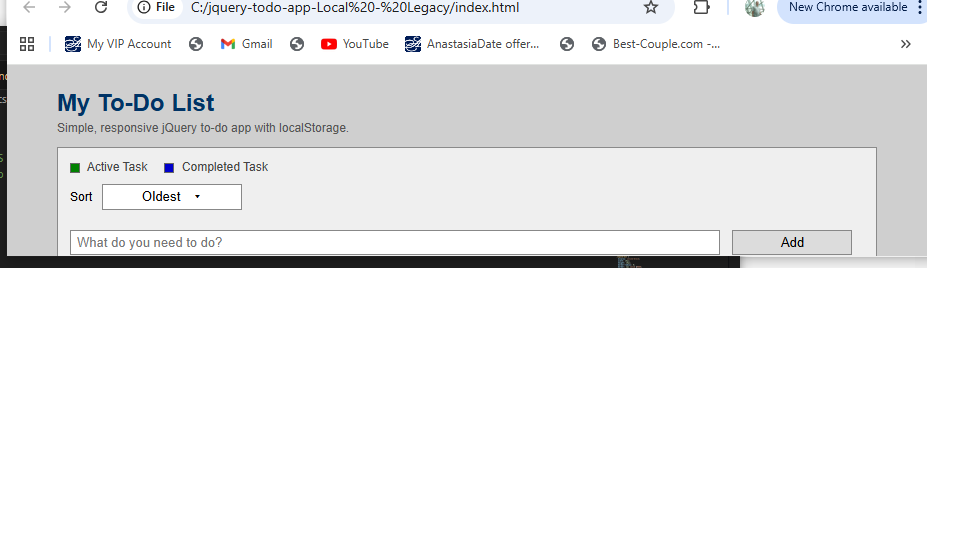
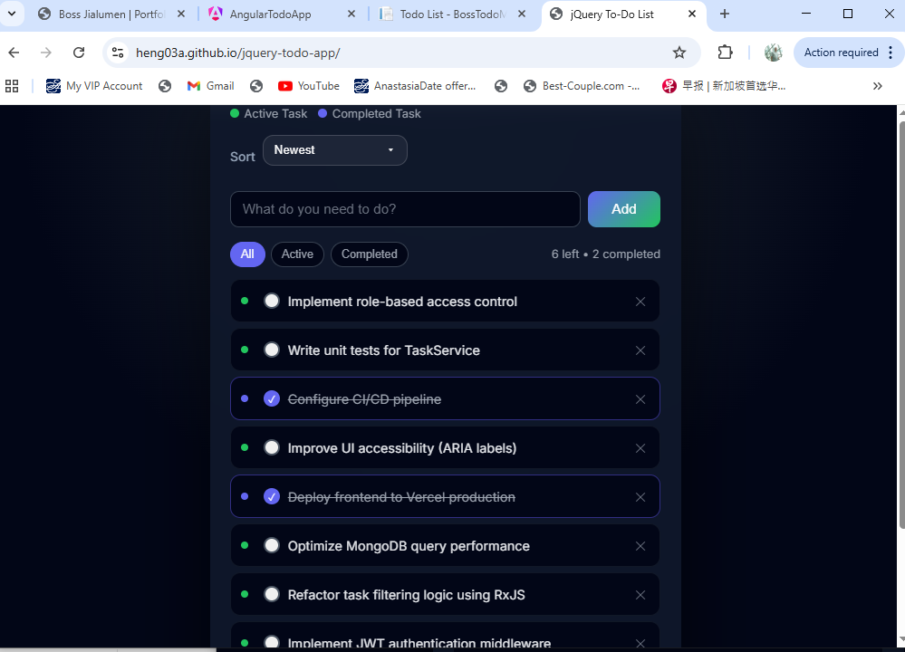
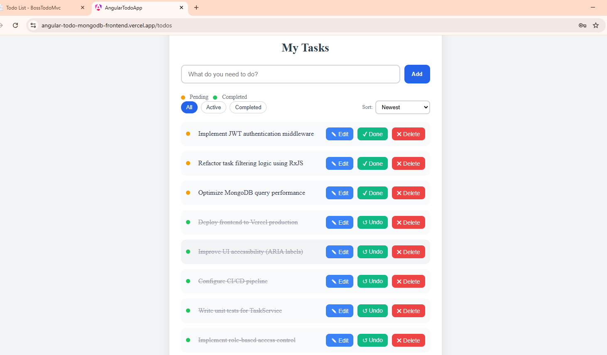
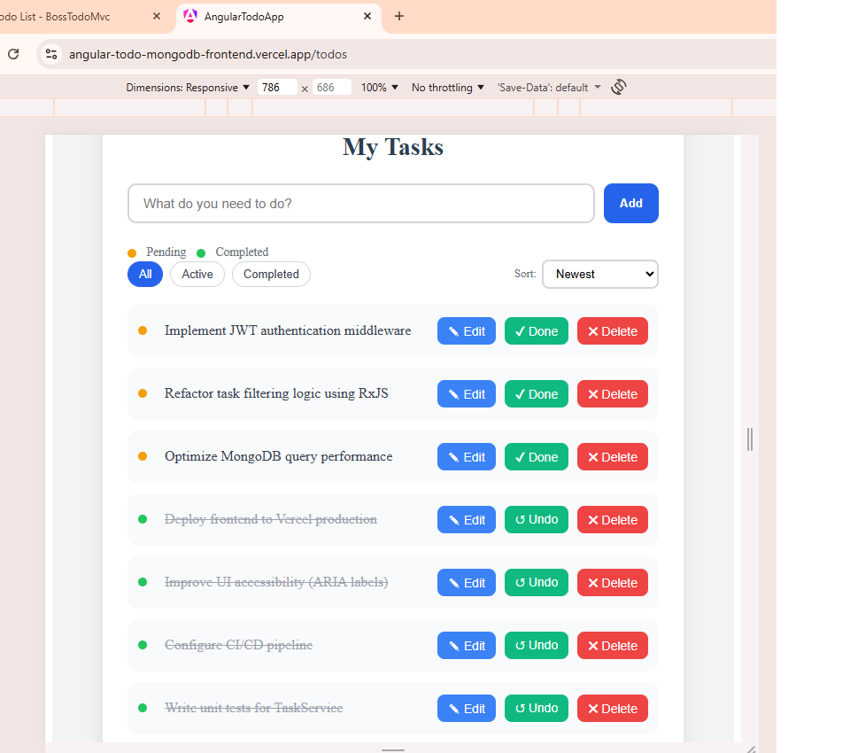
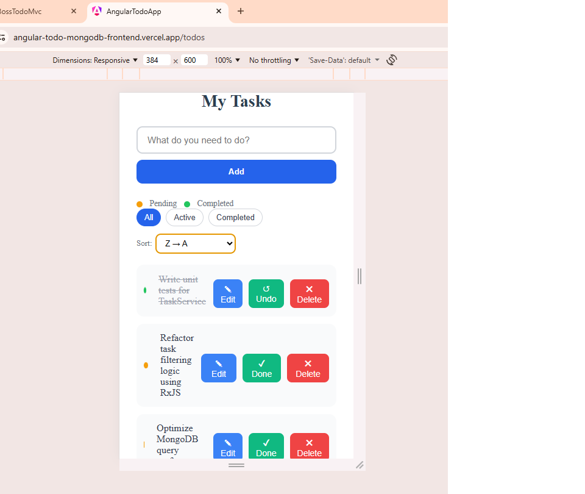

Responsive UI Development
Design and improve interfaces so they adapt more effectively across desktop, tablet, and mobile screen sizes while preserving readability and usability.
Responsive UI • Cross-Browser • Full-Stack Engineering
I help businesses and teams improve web applications through responsive UI engineering, cross-browser reliability, maintainable architecture, and full-stack implementation.
My work focuses on practical delivery: applications that are easier to use, easier to maintain, and better suited for modern access across desktop, tablet, and mobile devices.
Anytime • Anywhere • Any Device • Any Browser
Services
I provide practical web application support focused on usability, responsive layout quality, maintainable engineering structure, and reliable delivery across browsers and devices.
Design and improve interfaces so they adapt more effectively across desktop, tablet, and mobile screen sizes while preserving readability and usability.
Review and refine layouts, controls, and interactions so applications behave more consistently across Chrome, Edge, and Firefox environments.
Help modernize older web interfaces by improving structure, visual clarity, responsiveness, and user experience without losing practical business focus.
Build or enhance frontend-backend solutions using technologies such as ASP.NET Core, Angular, Node.js, Express, REST APIs, authentication flows, and cloud deployment.
Target Clients
My responsive UI and modernization work is especially relevant for teams or businesses that want to improve usability, modernize older interfaces, or strengthen the quality of web application delivery across devices and browsers.
Businesses that need a more professional, mobile-friendly, and maintainable web presence for internal systems, service portals, or operational tools.
Organizations that want to refresh older desktop-first systems into interfaces that are more usable, accessible, and aligned with modern working expectations.
Teams that already have working applications but need stronger responsive behavior, better layout consistency, or cross-browser refinement.
Projects that benefit from maintainable architecture, clear separation of concerns, API-based integration, and practical cloud-ready implementation.
Core Strengths
My engineering approach combines responsive interface design, full-stack implementation, and maintainable solution structure. I focus on building applications that are accessible to users, understandable to developers, and practical for long-term enhancement, testing, and deployment.
I design interfaces that adapt smoothly across desktop, tablet, and mobile screen sizes while preserving readability, usability, interaction clarity, and visual consistency.
I value browser compatibility as a core delivery requirement and verify that layouts, controls, and user interactions behave consistently across major browsers such as Chrome, Edge, and Firefox.
I build frontend-backend solutions with clear separation between presentation, API, and persistence layers, including JWT-based authentication, CORS configuration, and cloud-hosted deployment.
I emphasize maintainable folder structure, separation of concerns, clean layering, and reusable project patterns so that solutions remain easier to extend, troubleshoot, and hand over.
Design Value
Modern users access applications from different devices, screen dimensions, and browser environments. A responsive system must do more than simply shrink or stretch content; it must preserve usability, clarity, navigation flow, and interaction comfort regardless of where and how the application is accessed.
Responsive UI/UX design supports better accessibility, broader reach, stronger user confidence, and more practical day-to-day usage. It also helps organizations deliver systems that remain relevant as devices, usage patterns, and operational expectations continue to evolve.
Business Impact
Responsive UI/UX design contributes not only to visual presentation, but also to operational effectiveness, user adoption, maintainability, and long-term business value. A well-structured responsive system can improve accessibility, reduce friction for end users, and help organizations support diverse working styles and device usage patterns without needing separate solutions for different platforms.
Portfolio Showcase
The projects below demonstrate my focus on responsive design, full-stack integration, practical engineering structure, and production-minded implementation. Each project was selected to show a different dimension of frontend usability, system architecture, and maintainable delivery.
A responsive full-stack task management application built with Angular on the frontend and Node.js/Express with MongoDB on the backend. This project demonstrates distributed frontend-backend deployment, JWT-based authentication, CORS configuration, API integration, and cloud hosting with clear separation between client and server concerns.
A structured ASP.NET Core MVC task management application designed with layered solution architecture, domain-focused organization, Entity Framework Core persistence, and PostgreSQL integration. This project highlights maintainability, clean separation of concerns, and a reusable project structure suitable for professional application development.
A responsive client-side task management application built with jQuery, JavaScript, HTML, and CSS, using LocalStorage for browser-based persistence. This project demonstrates clean UI flow, responsive design fundamentals, and practical browser-based interaction handling in a lightweight frontend application.
Problem Solving
These projects reflect practical engineering challenges encountered during real-world development, including distributed deployment, maintainable application structure, and cross-browser responsive delivery.
Challenge: Separately deployed frontend (Vercel) and backend (Railway) services resulted in blocked API requests due to browser cross-origin security restrictions.
Solution: Implemented explicit origin whitelisting, enabled credentials support, configured request headers, and handled preflight OPTIONS requests in Express middleware.
Outcome: Achieved stable and secure communication between frontend and backend, enabling reliable cloud-hosted distributed application deployment.
Challenge: Mixing UI logic, business rules, and data access within the same layer increases complexity, making maintenance, debugging, and feature extension difficult.
Solution: Applied layered architecture with clear separation between presentation, application logic, and data persistence using structured folders and service/repository patterns.
Outcome: Improved code readability, reduced coupling, and enabled easier extension, testing, and reuse across future projects.
Challenge: Ensuring consistent layout, readability, and interaction behavior across different screen sizes and browser engines (Chrome, Edge, Firefox).
Solution: Implemented responsive layouts using flexible grids and breakpoints, optimized spacing and typography, and validated UI behavior across multiple browsers.
Outcome: Delivered a consistent and accessible user experience across desktop, tablet, and mobile environments, with reliable cross-browser rendering.
cross-browser
Cross-browser compatibility is an important part of professional UI delivery. A responsive application should not only look good in one browser, but also maintain layout stability, readability, and interaction consistency across commonly used browser environments.
My portfolio includes browser validation examples to demonstrate that responsive layouts, controls, and navigation flow remain reliable across multiple modern browsers.
This application has been tested across major browsers to ensure consistent layout, interaction behavior, and rendering.
Layout and interaction verification for a widely used browser environment.

Compatibility proof for Chromium-based enterprise and workplace browser usage.

Cross-browser validation to demonstrate consistency beyond a single browser engine.

System Design
I value architecture as part of practical software delivery. Even in smaller showcase projects, structure matters because it affects maintainability, scalability, development clarity, and how effectively a solution can evolve into a larger real-world application.
I organize applications so that user interface logic, business logic, and data access are not unnecessarily mixed together. This improves clarity, maintainability, and future enhancement work.
I build solutions with structured folders and layered responsibilities so the codebase can serve not only as a completed project, but also as a reusable template for future development.
My full-stack projects demonstrate clear separation between frontend presentation, backend API services, security handling, and persistence layers in a cloud-hosted environment.
I work toward deployment-ready application structure, including version control workflow, environment-based configuration, and live hosting of frontend and backend solutions.
[ Browser / User ]
↓
[ Frontend UI Layer ]
↓
[ API / Backend Layer ]
↓
[ Database / Persistence Layer ]
[ Supporting Concerns ]
Responsive Design | JWT Auth | CORS | Cloud Hosting | API Integration
Modernization
Many enterprise systems were originally designed around desktop-first assumptions, older browser behavior, tightly coupled codebases, or limited device accessibility. Modernization requires more than visual refresh; it involves clearer architecture, better usability, broader accessibility, and technical patterns that support present-day deployment and user expectations.
Responsive UI engineering, cross-browser reliability, layered structure, and cloud-ready application design all contribute to modernization efforts by improving maintainability, expanding accessibility, and making systems more practical for real-world operational use.

Original legacy interface before modernization, showing a fixed layout, older visual styling, and limited adaptability across screen sizes.

Modernized responsive interface with improved layout flexibility, clearer visual hierarchy, and better usability across desktop and smaller devices.
Responsive Evidence
Responsive design should be demonstrated with visible evidence. The screenshots below show how layout, spacing, content flow, and usability are preserved across different device categories and viewport sizes.
Full-width layout presentation for larger screen environments.

Responsive adaptation for standard working screen dimensions.

Mid-sized viewport validation for touch-friendly and readable presentation.

Compact-screen validation for stacked layout, readability, and interaction usability.

Work With Me
I support businesses and teams that need responsive UI improvement, cross-browser refinement, modernization of older systems, or structured full-stack web application development.
If you are looking to improve usability, modernize interface quality, or enhance web application quality and reliability across devices and browsers, I would be glad to discuss your project or opportunity.
Anytime • Anywhere • Any Device • Any Browser
Let’s Connect
For portfolio review, project discussion, or job opportunities, please connect through my GitHub, project portfolio, or direct email contact below.
I am open to roles involving responsive web application development, ASP.NET Core, Angular, Node.js, UI modernization, and full-stack engineering.
My work emphasizes practical UI/UX delivery, maintainable solution structure, and cloud-hosted application design.